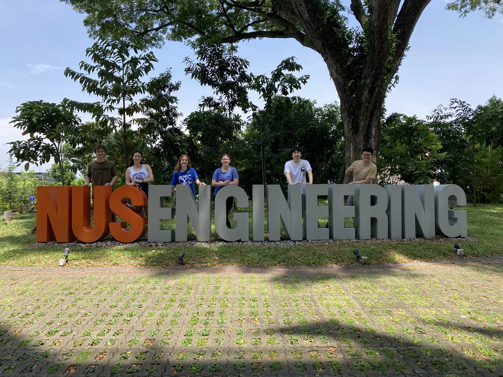
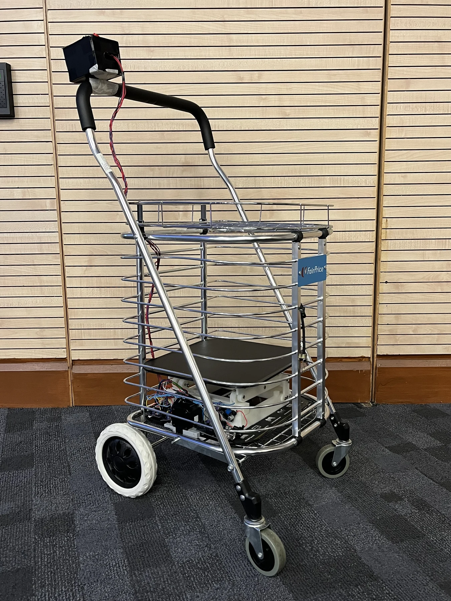
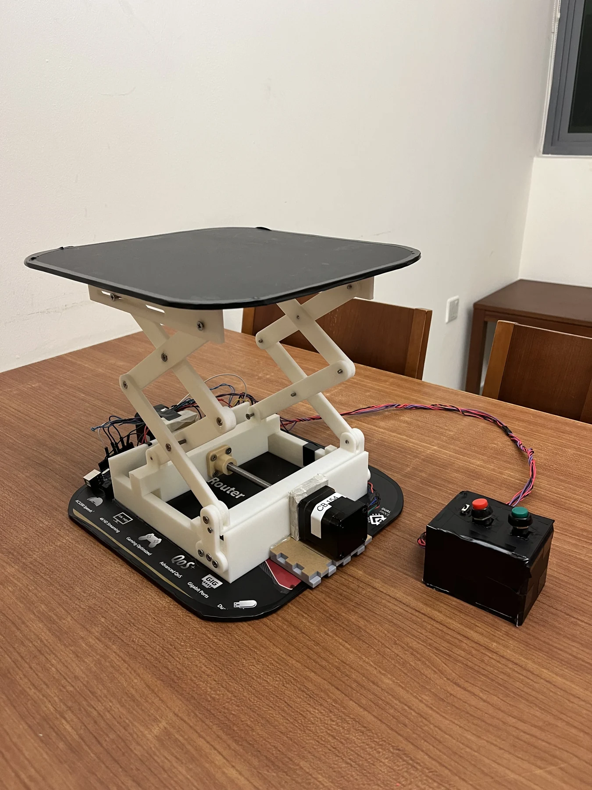
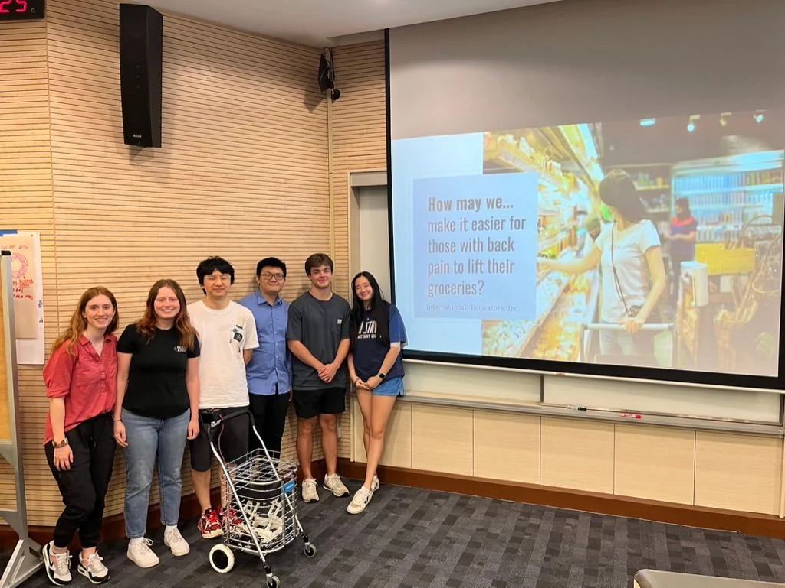

International Product Development
An automated grocery lift
In a product-development study abroad program, I worked with students from BYU, Penn State, and the National University of Singapore to develop a shopping trolley with an automated scissor lift.

The design goal
The concept aimed to make loading and unloading groceries easier for people with back pain or limited mobility by raising the contents of the trolley.


Our process
- Completed the design process over three weeks.
- Built a prototype of the automated scissor-lift mechanism.
- Participated in design reviews with professors from the partner universities.
- Prepared design documentation and presented the final concept.




Skills: Product development, Prototyping, International collaboration